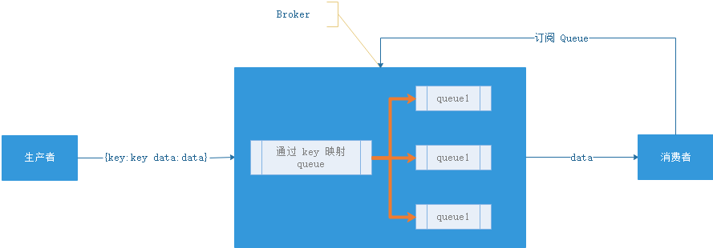
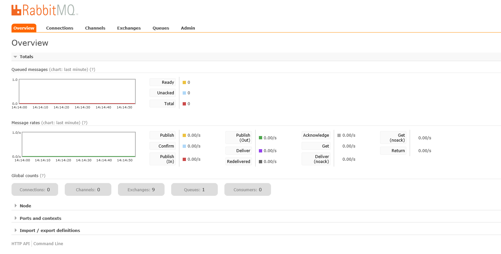
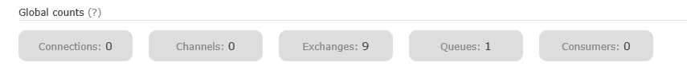
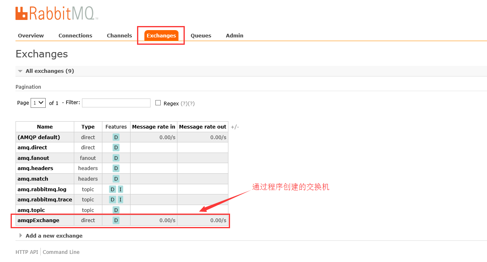
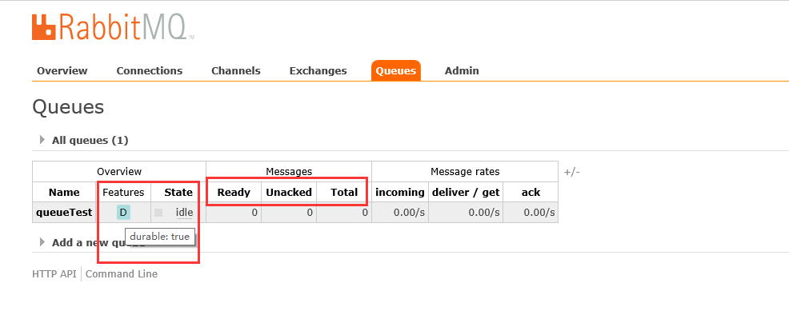

什么是MQ
Message Queue（MQ），消息队列中间件。很多人都说：MQ 通过将消息的发送和接收分离来实现应用程序的异步和解偶，这个给人的直觉是——MQ 是异步的，用来解耦的，但是这个只是 MQ 的效果而不是目的。MQ 真正的目的是为了通讯，屏蔽底层复杂的通讯协议，定义了一套应用层的、更加简单的通讯协议。一个分布式系统中两个模块之间通讯要么是 HTTP，要么是自己开发的 TCP，但是这两种协议其实都是原始的协议。HTTP 协议很难实现两端通讯——模块 A 可以调用 B，B 也可以主动调用 A，如果要做到这个两端都要背上 WebServer，而且还不支持长连接（HTTP 2.0 的库根本找不到）。TCP 就更加原始了，粘包、心跳、私有的协议，想一想头皮就发麻。MQ 所要做的就是在这些协议之上构建一个简单的“协议”——生产者/消费者模型。MQ 带给我的“协议”不是具体的通讯协议，而是更高层次通讯模型。它定义了两个对象——发送数据的叫生产者；接收数据的叫消费者， 提供一个 SDK 让我们可以定义自己的生产者和消费者实现消息通讯而无视底层通讯协议。
它一般用于线程、系统之间的通信。
Java EE中应用场景：
- 异步
- 消峰：秒杀系统中从消息队列中取合适数量的请求
- 解耦
消息队列的流派
有Borker的ＭＱ
这个流派通常有一台服务器作为 Broker，所有的消息都通过它中转。生产者把消息发送给它就结束自己的任务了，Broker 则把消息主动推送给消费者（或者消费者主动轮询）
重Topic
kafka、JMS（ActiveMQ）就属于这个流派，生产者会发送 key 和数据到 Broker，由 Broker 比较 key 之后决定给哪个消费者。这种模式是我们最常见的模式，是我们对 MQ 最多的印象。在这种模式下一个 topic 往往是一个比较大的概念，甚至一个系统中就可能只有一个 topic，topic 某种意义上就是 queue，生产者发送 key 相当于说：“hi，把数据放到 key 的队列中”

如上图所示，Broker 定义了三个队列，key1，key2，key3，生产者发送数据的时候会发送 key1 和 data，Broker 在推送数据的时候则推送 data（也可能把 key 带上）。
虽然架构一样但是 kafka 的性能要比 jms 的性能不知道高到多少倍，所以基本这种类型的 MQ 只有 kafka 一种备选方案。如果你需要一条暴力的数据流（在乎性能而非灵活性）那么 kafka 是最好的选择
但是Kafka会有丢包问题,重要数据请不要使用!
轻Topic
这种的代表是 RabbitMQ（或者说是 AMQP）。生产者发送 key 和数据，消费者定义订阅的队列，Broker 收到数据之后会通过一定的逻辑计算出 key 对应的队列，然后把数据交给队列

这种模式下解耦了 key 和 queue，在这种架构中 queue 是非常轻量级的（在 RabbitMQ 中它的上限取决于你的内存），消费者关心的只是自己的 queue；生产者不必关心数据最终给谁只要指定 key 就行了，中间的那层映射在 AMQP 中叫 exchange（交换机）。
AMQP 中有四种 exchange
- Direct exchange：key 就等于 queue
- Fanout exchange：无视 key，给所有的 queue 都来一份
- Topic exchange：key 可以用“宽字符”模糊匹配 queue
- Headers exchange：无视 key，通过查看消息的头部元数据来决定发给那个 queue（AMQP 头部元数据非常丰富而且可以自定义）
这种结构的架构给通讯带来了很大的灵活性，我们能想到的通讯方式都可以用这四种 exchange 表达出来。如果你需要一个企业数据总线（在乎灵活性）那么 RabbitMQ 绝对的值得一用
无Broker的MQ
无 Broker 的 MQ 的代表是 ZeroMQ。该作者非常睿智，他非常敏锐的意识到——MQ 是更高级的 Socket，它是解决通讯问题的。所以 ZeroMQ 被设计成了一个“库”而不是一个中间件，这种实现也可以达到——没有 Broker 的目的

节点之间通讯的消息都是发送到彼此的队列中，每个节点都既是生产者又是消费者。ZeroMQ 做的事情就是封装出一套类似于 Socket 的 API 可以完成发送数据，读取数据
ZeroMQ 其实就是一个跨语言的、重量级的 Actor 模型邮箱库。你可以把自己的程序想象成一个 Actor，ZeroMQ 就是提供邮箱功能的库；ZeroMQ 可以实现同一台机器的 RPC 通讯也可以实现不同机器的 TCP、UDP 通讯，如果你需要一个强大的、灵活、野蛮的通讯能力，别犹豫 ZeroMQ
消息队列的模式
点对点
一对一，消费者主动拉取数据，消息收到后消息清除，消息不会持久化
消息生产者生产消息发送到Queue中，然后消息消费者从Queue中取出并且消费消息。
消息被消费以后，queue中不再有存储，所以消息消费者不可能消费到已经被消费的消息。Queue支持存在多个消费者，但是对一个消息而言，只会有一个消费者可以消费。

发布/订阅模式
一对多，消费者消费数据之后不会清除消息，消息会持久化，定时删除
消息生产者（发布）将消息发布到topic中，同时有多个消息消费者（订阅）消费该消息。和点对点方式不同，发布到topic的消息会被所有订阅者消费。

RabbitMQ简介
RabbitMQ 的优点
- 基于 ErLang 语言开发具有高可用高并发的优点，适合辑群服务器
- 健壮、稳定、易用、跨平台、支持多种语言、文档齐全
- 有消息确认机制和持久化机制，可靠性高
- 开源
ErLang能实现公平调度,它能开启好多线程,但Java调度不太好,最多开1000线程,多了就出各种问题
RabbitMQ 的概念
生产者和消费者
- Producer：消息的生产者
- Consumer：消息的消费者
Queue
- 消息队列，提供了 FIFO 的处理机制，具有缓存消息的能力。RabbitMQ 中，队列消息可以设置为持久化，临时或者自动删除。
- 设置为持久化的队列，Queue 中的消息会在 Server 本地硬盘存储一份，防止系统 Crash，数据丢失
- 设置为临时队列，Queue 中的数据在系统重启之后就会丢失
- 设置为自动删除的队列，当不存在用户连接到 Server，队列中的数据会被自动删除
ExChange
Exchange 类似于数据通信网络中的交换机，提供消息路由策略。RabbitMQ 中，Producer 不是通过信道直接将消息发送给 Queue，而是先发送给 ExChange。一个 ExChange 可以和多个 Queue 进行绑定，Producer 在传递消息的时候，会传递一个 ROUTING_KEY，ExChange 会根据这个 ROUTING_KEY 按照特定的路由算法，将消息路由给指定的 Queue。和 Queue 一样，ExChange 也可设置为持久化，临时或者自动删除
ExChange 的 4 种类型
- direct（默认）：直接交换器，工作方式类似于单播，ExChange 会将消息发送完全匹配 ROUTING_KEY 的 Queue（key 就等于 queue）
- fanout：广播是式交换器，不管消息的 ROUTING_KEY 设置为什么，ExChange 都会将消息转发给所有绑定的 Queue（无视 key，给所有的 queue 都来一份）
- topic：主题交换器，工作方式类似于组播，ExChange 会将消息转发和 ROUTING_KEY 匹配模式相同的所有队列（key 可以用“宽字符”模糊匹配 queue），比如，ROUTING_KEY 为
user.stock的 Message 会转发给绑定匹配模式为* .stock,user.stock，* . *和#.user.stock.#的队列。（ * 表是匹配一个任意词组，# 表示匹配 0 个或多个词组） - headers：消息体的 header 匹配，无视 key，通过查看消息的头部元数据来决定发给那个 queue（AMQP 头部元数据非常丰富而且可以自定义）
Binding
所谓绑定就是将一个特定的 ExChange 和一个特定的 Queue 绑定起来。ExChange 和 Queue 的绑定可以是多对多的关系
Virtual Host
在 RabbitMQ Server 上可以创建多个虚拟的 Message Broker，又叫做 Virtual Hosts (vhosts)。每一个 vhost 本质上是一个 mini-rabbitmq server，分别管理各自的 ExChange，和 bindings。vhost 相当于物理的 Server，可以为不同 app 提供边界隔离，使得应用安全的运行在不同的 vhost 实例上，相互之间不会干扰。Producer 和 Consumer 连接 rabbit server 需要指定一个 vhost
RabbitMQ 的使用过程
- 客户端连接到消息队列服务器，打开一个 Channel。
- 客户端声明一个 ExChange，并设置相关属性。
- 客户端声明一个 Queue，并设置相关属性。
- 客户端使用 Routing Key，在 ExChange 和 Queue 之间建立好绑定关系。
- 客户端投递消息到 ExChange。
- ExChange 接收到消息后，就根据消息的 key 和已经设置的 binding，进行消息路由，将消息投递到一个或多个队列里
RabbitMQ安装
docker-compose.yml
创建docker-compose.yml
1 | version: '3.1' |
docker-compose up -d
RabbitMQ WebUI
访问地址
首页

Global counts

- Connections：连接数
- Channels：频道数
- Exchanges：交换机数
- Queues：队列数
- Consumers：消费者数
交换机界面

队列界面

- Name：消息队列的名称，这里是通过程序创建的
- Features：消息队列的类型，durable:true为会持久化消息
- Ready：准备好的消息
- Unacked：未确认的消息
- Total：全部消息
- 备注：如果都为 0 则说明全部消息处理完成
RabbitMQ使用
maven
1 | <dependency> |
yml
1 | spring: |
配置队列
1 |
|
生产者
1 | /** |
消费者
1 |
|